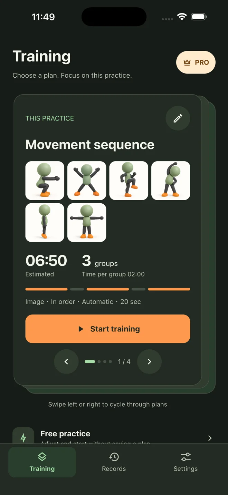
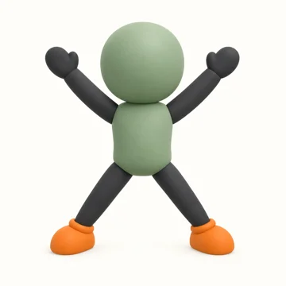
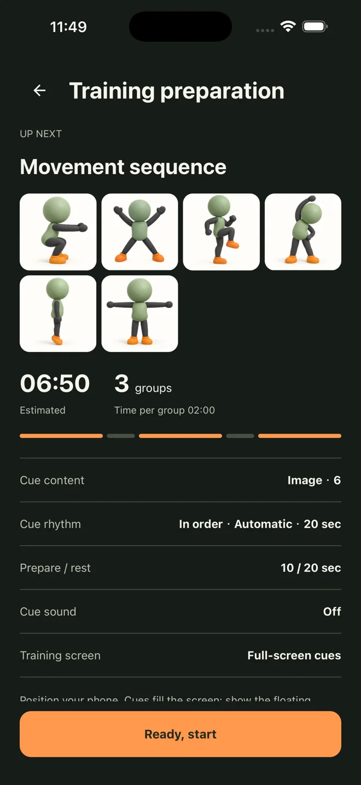
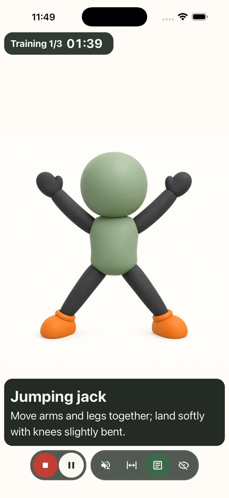

Timing that works for you
Choose fixed or random intervals, with automatic progression or manual cue changes.
A CLEAR CUE FOR YOUR NEXT MOVE
Turn pictures, colors and words into your practice partner. Choose your cues, set your pace, and focus on the next move.
Free to download · No app account required

A look at 1.7 · Availability varies by platform
01 / MAKE IT YOURS
You decide what each cue means. Use a picture for a movement, a color for a response, or a word for a direction.

Jumping jack02 / SET YOUR PACE
Set up your cues and timing, then make the session your own. Pause when you need to. Continue when you’re ready.
Take a look inside ↗Choose fixed or random intervals, with automatic progression or manual cue changes.
Add your pictures and text, and give each prompt a meaning that fits your practice.
See cues on a spacious training screen, with adjustable image fitting and text layout.
03 / FROM SETUP TO SESSION
Real screens from version 1.7. iOS 1.7 is not yet available; features depend on the version offered in your store.
In 1.7, start with a preset, practice freely, or create your own plan.

Choose cue timing. In 1.7, organize preparation, training groups and rest.

Follow the visual prompt. In 1.7, review your session and train again.
GOOD TO KNOW
No. Training Prompt displays visual cues; it does not detect your movements. Cue counts are not completed exercise counts or a medical or athletic assessment.
No app account is required. Training content and settings are stored on your device, as are plans and records in 1.7. Uninstalling may remove local data, so keep your original images.
The app is free to download and includes ads. Lifetime Premium is a one-time ad-removal purchase, with no paid subscription. Price and availability are shown in the app and store; the iOS product is still awaiting review.
Use the same store account you purchased with and select Restore Purchases in the app. Purchases do not automatically transfer between platforms. Contact support if you need help.
YOUR NEXT SESSION STARTS HERE
Start with one clear cue.